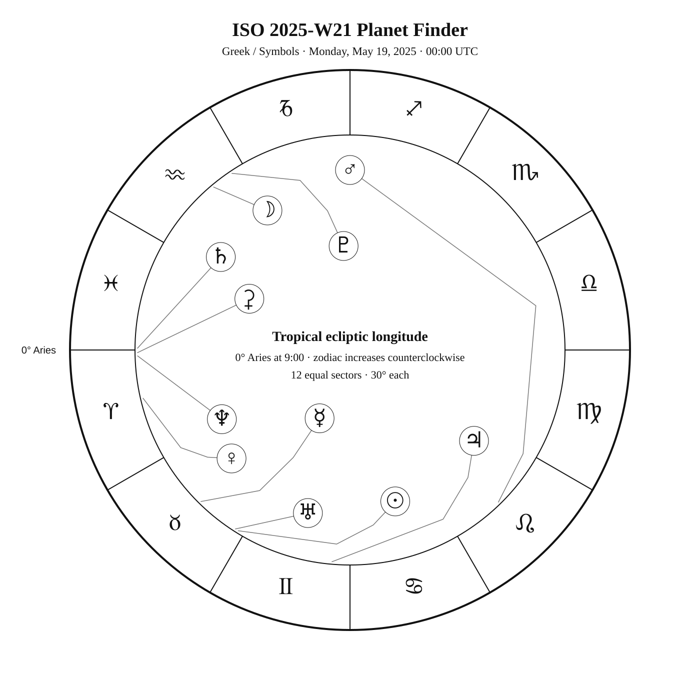
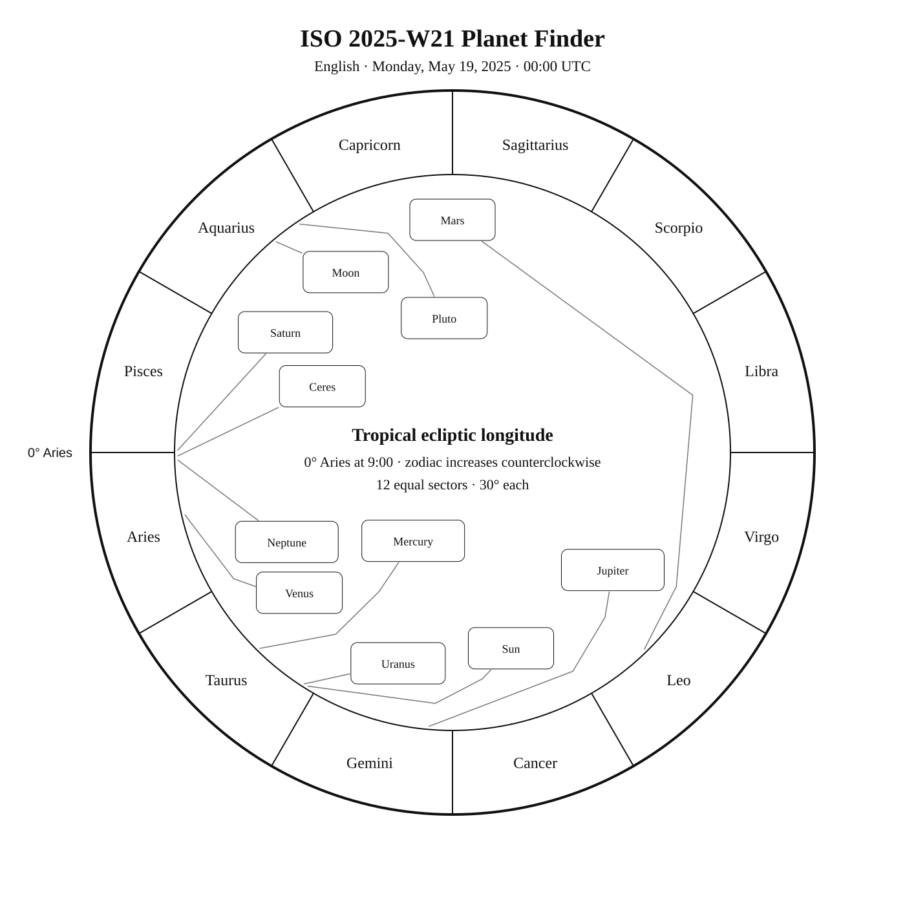
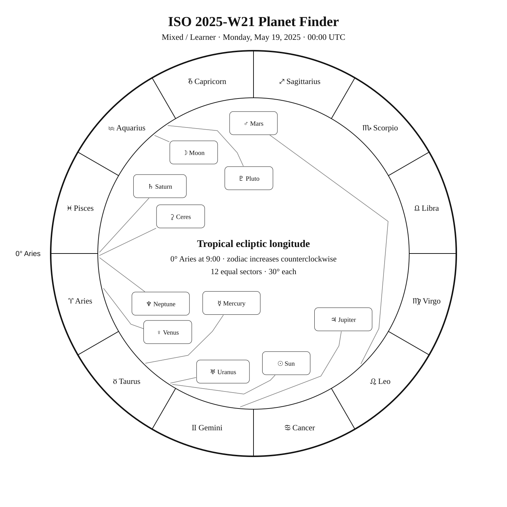

ISO 2025-W21
Week begins: Monday, May 19, 2025
Calendar
| Date | Zodiac day | Events |
|---|---|---|
| Mon, May 19, 2025 | ♉ 31 | C98 / NGC 4609 —  7 6.9 — Southern Spring 7 6.9 — Southern SpringM60 — 9 8.8 — Tropical SpringFinest NGC 65 / NGC 4656 · Hockey Stick or Crowbar — 10 9.7 — Northern Spring |
| Tue, May 20, 2025 | ♊ 1 | ♊ Sun enters Gemini — 18:54:38 UTC 🌗 Last Quarter — 11:58:46 UTC β Mus —  3 3.0 — Antarctic Spring 3 3.0 — Antarctic SpringMimosa (β Cru) — Var 1 1.3 1.2–1.3 — Southern SpringC52 / NGC 4697 — 9 9.3 — Tropical SpringFinest NGC 83 / NGC 4699 · MCG -1-33-13 — 10 10.4 — Tropical Spring |
| Wed, May 21, 2025 | ♊ 2 | Finest NGC 73 / NGC 4725 · MCG 4-30-22 — 10 9.9 — Northern SpringM94 — 8 8.2 — Northern SpringFinest NGC 84 / NGC 4762 · MCG 2-33-33 — 11 11.1 — Tropical SpringC99 / Coalsack · Coalsack Nebula — — Southern SpringC94 / NGC 4755 · Jewel Box Cluster — 4 4.2 — Southern SpringAlioth (ε UMa) — Var 2 1.8 1.76–1.78 — Northern Spring |
| Thu, May 22, 2025 | ♊ 3 | α1 CVn —  6 5.6 — Northern Spring 6 5.6 — Northern SpringCor Caroli (α2 CVn) — 3 2.9 — Northern SpringM64 — 9 8.5 — Tropical Spring |
| Fri, May 23, 2025 | ♊ 4 | C105 / NGC 4833 — 7 7.3 — Antarctic SpringC35 / NGC 4889 — 11 11.4 — Northern Spring |
| Sat, May 24, 2025 | ♊ 5 | C83 / NGC 4945 — 10 9.5 — Southern Spring |
| Sun, May 25, 2025 | ♊ 6 | α Com — 5 5.2 — Tropical Spring |
Weekly Solar-System Ephemeris
Snapshot: Week begins May 19, 2025, 00:00 UTC.
(-90° to +90°; defaults +45°, 21:00 LAT)
| Body | ☉︎ | ☽︎ | ☿︎ | ♀︎ | ♂︎ | ♃︎ | ♄︎ |
|---|---|---|---|---|---|---|---|
| Ecliptic | ♉︎ 28°17′ β −0°00′ | ♒︎ 9°56′ β −3°36′ | ♉︎ 15°28′ β −1°20′ | ♈︎ 13°07′ β −1°12′ | ♌︎ 14°18′ β +1°40′ | ♊︎ 25°08′ β −0°12′ | ♓︎ 29°31′ β −2°03′ |
| Observing |  | -10.7 | ☉︎ | -4.5 | 1.2 | -1.9 | 1.1 |
| Rise | 04:31 | 00:38 | 04:04 | 02:47 | 10:04 | 06:10 | 02:23 |
| Set | 19:29 | 09:41 | 18:16 | 15:25 | 00:46 | 21:40 | 14:12 |
Extended targets:
| Body | ⚳︎ | ♅︎ | ♆︎ | ♇︎ |
|---|---|---|---|---|
| Ecliptic | ♈︎ 0°43′ β −9°14′ | ♉︎ 27°21′ β −0°13′ | ♈︎ 1°36′ β −1°17′ | ♒︎ 3°46′ β −3°36′ |
| Observing | 9.3 | ☉︎ | 7.8 | 14.5 |
| Rise | 03:04 | 04:31 | 02:23 | 00:20 |
| Set | 14:03 | 19:22 | 14:24 | 09:08 |
β = ecliptic latitude (+ north, − south).
Rise and set are Local Apparent Time for the selected latitude.
Naked-eye observing uses the Sun’s altitude at the selected Monday observer time: Daylight (Sun ≥ −0.833°), Civil twilight (−0.833° to −6°), Nautical twilight (−6° to −12°), Astronomical twilight (−12° to −18°), and Night (below −18°).
Solar Glare identifies a body too close to the Sun when the sky-state rule does not already supersede its naked-eye classification.
The Sun’s observing status uses this same five-state sky classification.
Planet Finder



Sky Notes
Kilroy: Sky Notes · generated 2026-10-23 09:44:05 UTC
ISO 2025-W21 runs from May 19 through May 25. Ceres and Neptune are separated by about 0.9° in geocentric ecliptic longitude at the Monday 00:00 UTC snapshot. Ceres and Saturn are separated by about 1.2° in geocentric ecliptic longitude at the Monday 00:00 UTC snapshot.


Naked eye: 🌗 Last Quarter — 11:58:46 UTC. Moderate moonlight makes timing and local sky position important for faint targets. Use β Mus, Mimosa, Alioth, Cor Caroli as the week’s fixed-sky framework.
Planets: Moon: Naked eye; magnitude -10.7; direct motion; 65.8% illuminated. Below the horizon at 21:00 local apparent solar time, 45°N. Monday 00:00 UTC snapshot. Conjunction with Venus in ecliptic longitude May 23 21:12 UTC. Conjunction with Ceres in ecliptic longitude May 22 19:37 UTC. Conjunction with Saturn in ecliptic longitude May 22 16:06 UTC. Conjunction with Neptune in ecliptic longitude May 22 19:15 UTC. Mercury: In solar glare; magnitude -1.1; direct motion; 88.2% illuminated. Monday 00:00 UTC snapshot. Conjunction with Uranus in ecliptic longitude May 24 23:15 UTC. Venus: Naked eye; magnitude -4.5; direct motion; 41.9% illuminated. Below the horizon at 21:00 local apparent solar time, 45°N. Monday 00:00 UTC snapshot. Conjunction with Moon in ecliptic longitude May 23 21:12 UTC. Mars: Naked eye; magnitude 1.2; direct motion; 90.3% illuminated. Monday 00:00 UTC snapshot. Ceres: Telescope; magnitude 9.3; direct motion; 97.9% illuminated. Below the horizon at 21:00 local apparent solar time, 45°N. Monday 00:00 UTC snapshot. Conjunction with Moon in ecliptic longitude May 22 19:37 UTC. Conjunction with Neptune in ecliptic longitude May 22 00:37 UTC. Jupiter: Naked eye; magnitude -1.9; direct motion; 99.8% illuminated. Monday 00:00 UTC snapshot. Saturn: Naked eye; magnitude 1.1; direct motion; 99.8% illuminated. Below the horizon at 21:00 local apparent solar time, 45°N. Monday 00:00 UTC snapshot. Conjunction with Moon in ecliptic longitude May 22 16:06 UTC. Uranus: In solar glare; magnitude 5.8; direct motion; 100.0% illuminated. Monday 00:00 UTC snapshot. Conjunction with Mercury in ecliptic longitude May 24 23:15 UTC. Neptune: Telescope; magnitude 7.8; direct motion; 100.0% illuminated. Below the horizon at 21:00 local apparent solar time, 45°N. Monday 00:00 UTC snapshot. Conjunction with Moon in ecliptic longitude May 22 19:15 UTC. Conjunction with Ceres in ecliptic longitude May 22 00:37 UTC. Pluto: Substantial telescope; magnitude 14.5; retrograde motion; 100.0% illuminated. Below the horizon at 21:00 local apparent solar time, 45°N. Monday 00:00 UTC snapshot.


Binoculars: Trace Canes Venatici’s charted figure in the finder, then identify Alpha1 CVn at its charted position. Trace Coma Berenices’s charted figure in the finder, then identify Diadem at its charted position.
Small telescope: NGC 4609: consult its dedicated finder and observing story for equipment guidance; M60: consult its dedicated finder and observing story for equipment guidance; Hockey Stick or Crowbar: consult its dedicated finder and observing story for equipment guidance; NGC 4697: consult its dedicated finder and observing story for equipment guidance; MCG -1-33-13: consult its dedicated finder and observing story for equipment guidance; MCG 4-30-22: consult its dedicated finder and observing story for equipment guidance; M94: consult its dedicated finder and observing story for equipment guidance; MCG 2-33-33: consult its dedicated finder and observing story for equipment guidance; Jewel Box Cluster: consult its dedicated finder and observing story for equipment guidance; Black Eye Galaxy: consult its dedicated finder and observing story for equipment guidance; NGC 4833: consult its dedicated finder and observing story for equipment guidance; NGC 4889: consult its dedicated finder and observing story for equipment guidance; NGC 4945: consult its dedicated finder and observing story for equipment guidance
Substantial telescope: No fixed-sky Calendar object is classified as requiring a substantial telescope this week.
Other objects listed this week: None
Mercury
Mercury: in solar glare at the Monday 00:00 UTC snapshot. Rises 04:04; sets 18:16 (45°N, local apparent solar time). Visual magnitude -1.1. The disk is 88.2% illuminated (gibbous). It is 12.9° from the Sun, on its west side. Motion is direct at 1.961° per day in ecliptic longitude at the snapshot. Position reference: Menkar, 11.3° away. Conjunction with Uranus in ecliptic longitude May 24 23:15 UTC. Mercury: 11.3° from Menkar in the Pathfinder.
Venus
Venus: naked eye at the Monday 00:00 UTC snapshot. At 45°N and 21:00 local apparent solar time, it is 41.0° below the horizon. Rises 02:47; sets 15:25 (45°N, local apparent solar time). Visual magnitude -4.5. The disk is 41.9% illuminated (crescent). It is 45.2° from the Sun, on its west side. Motion is direct at 0.847° per day in ecliptic longitude at the snapshot. Position reference: Alrescha, 18.3° away. Conjunction with Moon in ecliptic longitude May 23 21:12 UTC. Venus: 18.3° from Alrescha in the Pathfinder.
Moon
Moon: naked eye at the Monday 00:00 UTC snapshot. At 45°N and 21:00 local apparent solar time, it is 37.6° below the horizon. Rises 00:38; sets 09:41 (45°N, local apparent solar time). Visual magnitude -10.7. The disk is 65.8% illuminated (waning gibbous). It is 108.3° from the Sun, on its west side. Motion is direct at 12.975° per day in ecliptic longitude at the snapshot. Position reference: Dabih, 9.9° away. Conjunction with Venus in ecliptic longitude May 23 21:12 UTC. Conjunction with Ceres in ecliptic longitude May 22 19:37 UTC. Conjunction with Saturn in ecliptic longitude May 22 16:06 UTC. Conjunction with Neptune in ecliptic longitude May 22 19:15 UTC. Moon: 9.9° from Dabih in the Pathfinder.
Mars
Mars: naked eye at the Monday 00:00 UTC snapshot. At 45°N and 21:00 local apparent solar time, it is 38.2° above the horizon. Rises 10:04; sets 00:46 (45°N, local apparent solar time). Visual magnitude 1.2. The disk is 90.3% illuminated (gibbous). It is 76.0° from the Sun, on its east side. Motion is direct at 0.506° per day in ecliptic longitude at the snapshot. Position reference: Acubens, 6.8° away. Mars: 6.8° from Acubens in the Pathfinder.
Jupiter
Jupiter: naked eye at the Monday 00:00 UTC snapshot. At 45°N and 21:00 local apparent solar time, it is 5.4° above the horizon. Rises 06:10; sets 21:40 (45°N, local apparent solar time). Visual magnitude -1.9. The disk is 99.8% illuminated (nearly full). It is 26.9° from the Sun, on its east side. Motion is direct at 0.216° per day in ecliptic longitude at the snapshot. Position reference: Elnath, 6.0° away. Jupiter: 6.0° from Elnath in the Pathfinder.
Saturn
Saturn: naked eye at the Monday 00:00 UTC snapshot. At 45°N and 21:00 local apparent solar time, it is 46.2° below the horizon. Rises 02:23; sets 14:12 (45°N, local apparent solar time). Visual magnitude 1.1. The disk is 99.8% illuminated (nearly full). It is 58.8° from the Sun, on its west side. Motion is direct at 0.083° per day in ecliptic longitude at the snapshot. Position reference: Fumalsamakah, 15.3° away. Neptune is 2.2° away at the snapshot. Conjunction with Moon in ecliptic longitude May 22 16:06 UTC. Saturn: 15.3° from Fumalsamakah in the Pathfinder.
Uranus
Uranus: in solar glare at the Monday 00:00 UTC snapshot. Rises 04:31; sets 19:22 (45°N, local apparent solar time). Visual magnitude 5.8. The disk is 100.0% illuminated (nearly full). It is 0.9° from the Sun, on its west side. Motion is direct at 0.058° per day in ecliptic longitude at the snapshot. Position reference: Aldebaran, 13.8° away. Conjunction with Mercury in ecliptic longitude May 24 23:15 UTC. Uranus: 13.8° from Aldebaran in the Pathfinder.
Neptune
Neptune: telescope at the Monday 00:00 UTC snapshot. At 45°N and 21:00 local apparent solar time, it is 45.0° below the horizon. Rises 02:23; sets 14:24 (45°N, local apparent solar time). Visual magnitude 7.8. The disk is 100.0% illuminated (nearly full). It is 56.7° from the Sun, on its west side. Motion is direct at 0.024° per day in ecliptic longitude at the snapshot. Position reference: Fumalsamakah, 16.3° away. Saturn is 2.2° away at the snapshot. Conjunction with Moon in ecliptic longitude May 22 19:15 UTC. Conjunction with Ceres in ecliptic longitude May 22 00:37 UTC. Neptune: 16.3° from Fumalsamakah in the Pathfinder.
Ceres
Ceres: telescope at the Monday 00:00 UTC snapshot. At 45°N and 21:00 local apparent solar time, it is 52.9° below the horizon. Rises 03:04; sets 14:03 (45°N, local apparent solar time). Visual magnitude 9.3. The disk is 97.9% illuminated (gibbous). It is 58.0° from the Sun, on its west side. Motion is direct at 0.317° per day in ecliptic longitude at the snapshot. Position reference: Diphda, 11.7° away. Conjunction with Moon in ecliptic longitude May 22 19:37 UTC. Conjunction with Neptune in ecliptic longitude May 22 00:37 UTC. Ceres: 11.7° from Diphda in the Pathfinder.
Pluto
Pluto: substantial telescope at the Monday 00:00 UTC snapshot. At 45°N and 21:00 local apparent solar time, it is 34.1° below the horizon. Rises 00:20; sets 09:08 (45°N, local apparent solar time). Visual magnitude 14.5. The disk is 100.0% illuminated (nearly full). It is 114.5° from the Sun, on its west side. Motion is retrograde at 0.006° per day in ecliptic longitude at the snapshot. Position reference: Dabih, 8.2° away. Pluto: 8.2° from Dabih in the Pathfinder.
Highlights
Mercury
In solar glare; magnitude -1.1; direct motion; 88.2% illuminated. Monday 00:00 UTC snapshot. Conjunction with Uranus in ecliptic longitude May 24 23:15 UTC. Mercury: 11.3° from Menkar in the Pathfinder.
Venus
Naked eye; magnitude -4.5; direct motion; 41.9% illuminated. Below the horizon at 21:00 local apparent solar time, 45°N. Monday 00:00 UTC snapshot. Conjunction with Moon in ecliptic longitude May 23 21:12 UTC. Venus: 18.3° from Alrescha in the Pathfinder.
Moon
Naked eye; magnitude -10.7; direct motion; 65.8% illuminated. Below the horizon at 21:00 local apparent solar time, 45°N. Monday 00:00 UTC snapshot. Conjunction with Venus in ecliptic longitude May 23 21:12 UTC. Conjunction with Ceres in ecliptic longitude May 22 19:37 UTC. Conjunction with Saturn in ecliptic longitude May 22 16:06 UTC. Conjunction with Neptune in ecliptic longitude May 22 19:15 UTC. Moon: 9.9° from Dabih in the Pathfinder.
Mars
Naked eye; magnitude 1.2; direct motion; 90.3% illuminated. Monday 00:00 UTC snapshot. Mars: 6.8° from Acubens in the Pathfinder.
Jupiter
Naked eye; magnitude -1.9; direct motion; 99.8% illuminated. Monday 00:00 UTC snapshot. Jupiter: 6.0° from Elnath in the Pathfinder.
Saturn
Naked eye; magnitude 1.1; direct motion; 99.8% illuminated. Below the horizon at 21:00 local apparent solar time, 45°N. Monday 00:00 UTC snapshot. Conjunction with Moon in ecliptic longitude May 22 16:06 UTC. Saturn: 15.3° from Fumalsamakah in the Pathfinder.
Uranus
In solar glare; magnitude 5.8; direct motion; 100.0% illuminated. Monday 00:00 UTC snapshot. Conjunction with Mercury in ecliptic longitude May 24 23:15 UTC. Uranus: 13.8° from Aldebaran in the Pathfinder.
Neptune
Telescope; magnitude 7.8; direct motion; 100.0% illuminated. Below the horizon at 21:00 local apparent solar time, 45°N. Monday 00:00 UTC snapshot. Conjunction with Moon in ecliptic longitude May 22 19:15 UTC. Conjunction with Ceres in ecliptic longitude May 22 00:37 UTC. Neptune: 16.3° from Fumalsamakah in the Pathfinder.
Ceres
Telescope; magnitude 9.3; direct motion; 97.9% illuminated. Below the horizon at 21:00 local apparent solar time, 45°N. Monday 00:00 UTC snapshot. Conjunction with Moon in ecliptic longitude May 22 19:37 UTC. Conjunction with Neptune in ecliptic longitude May 22 00:37 UTC. Ceres: 11.7° from Diphda in the Pathfinder.
Pluto
Substantial telescope; magnitude 14.5; retrograde motion; 100.0% illuminated. Below the horizon at 21:00 local apparent solar time, 45°N. Monday 00:00 UTC snapshot. Pluto: 8.2° from Dabih in the Pathfinder.